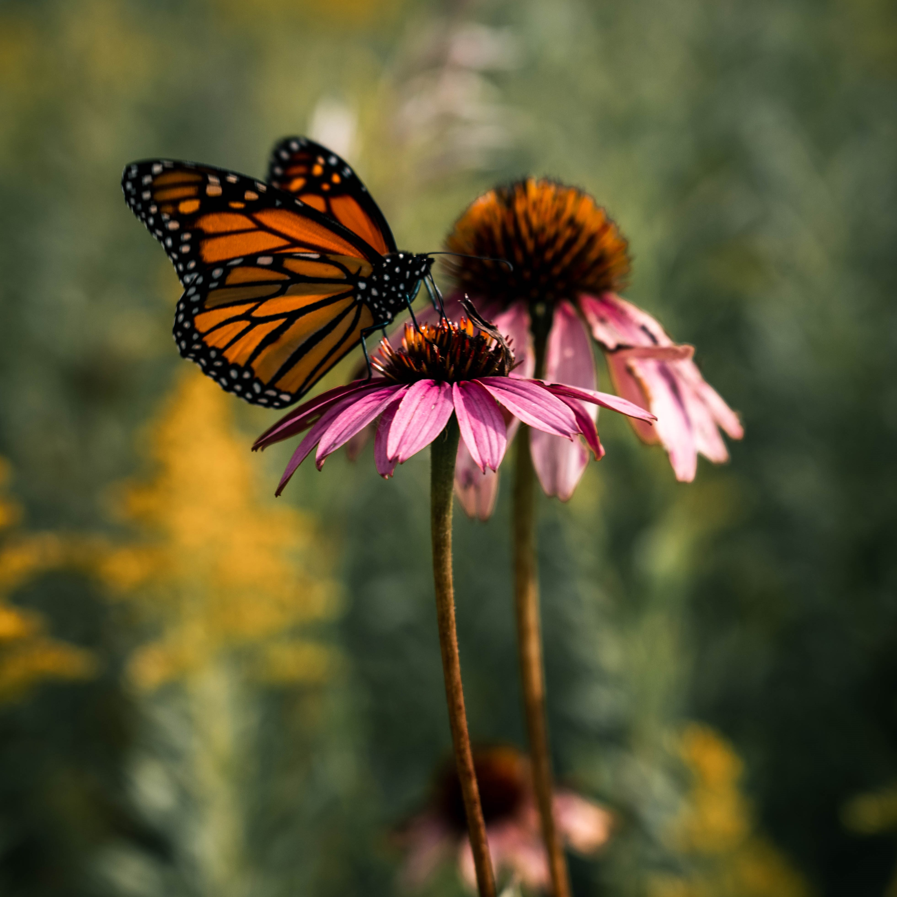
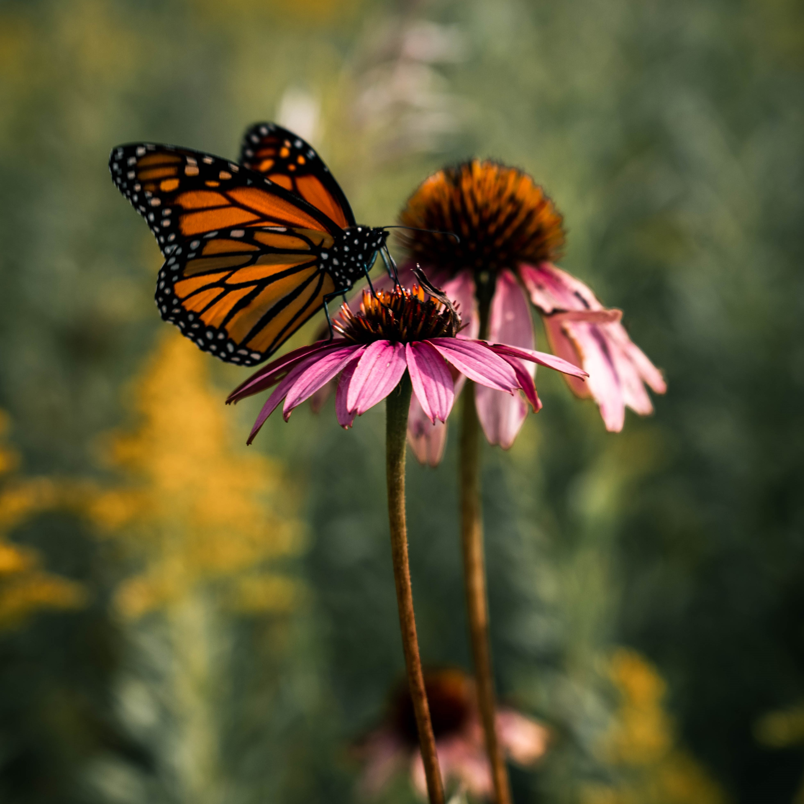

About Rooted Prints
I picked up a camera for the first time in July of 2018 and I haven't put it down since. It’s kind of wild how a few short years of finding and pursuing a passion can completely change the outlook of life. I graduated from the University of Wisconsin Oshkosh in 2018 with an Environmental Studies degree (emphasis in science) and then promptly got rid of 90% of my belongings to backpack around Europe and Southeast Asia for 6 months with my then-boyfriend/now-husband, Alex. In preparation for our trip, Alex had bought a decent starter camera with a variety of lenses and began to teach me how to use it a month before we left in July. Immediately, I was hooked. Without school or work to get in my way, I fell headfirst into researching and practising photography: compositions, manual mode, editing styles, the whole works.
Upon returning to the states, I worked as an Ecological Technician for a small company doing ecological restoration projects around Minnesota for about 8 months before pursuing media professionally. I then spent a few years filming weddings on the side (Star Media Weddings), and I currently run a digital media and marketing company (Star Media), own and operate a few furnished rentals in 2 duplexes that I own and renovate, and am enrolled at Dakota County Technical College for Software Development. In regards to my photography, I’ve always wanted to do more with my photos than post them on Instagram or let them sit on a hard drive. I pour myself into my photos and edits and I hope that I can share that joy with other people when they see my artwork on their walls - thus Rooted Prints was born and founded in 2021!
Contact
(651) 307-1128
Hours
| Mon | Tues | Wed | Thurs | Fri | Sat | Sun |
|---|---|---|---|---|---|---|
| 8AM-5PM | 8AM-5PM | 8AM-5PM | 8AM-5PM | 8AM-12PM | Closed | Closed |